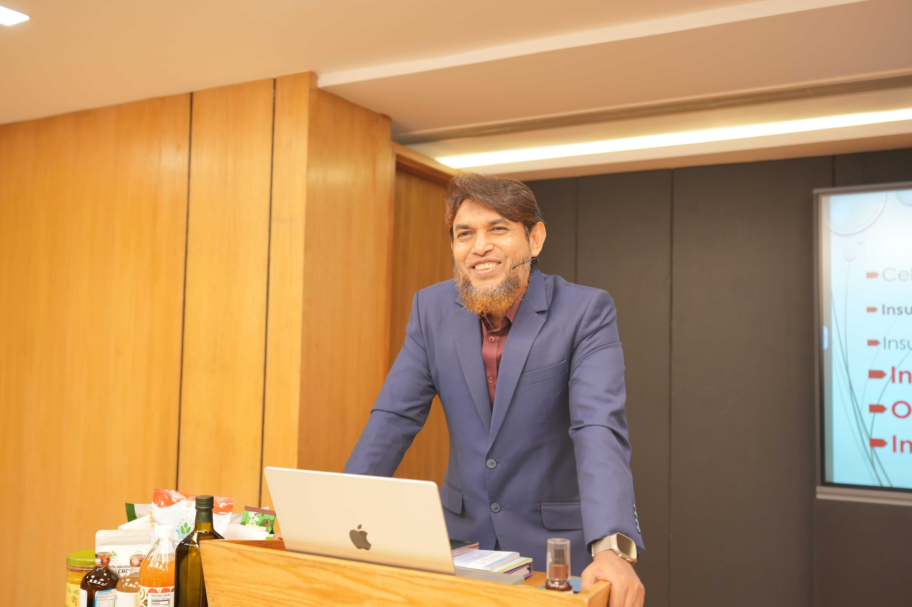
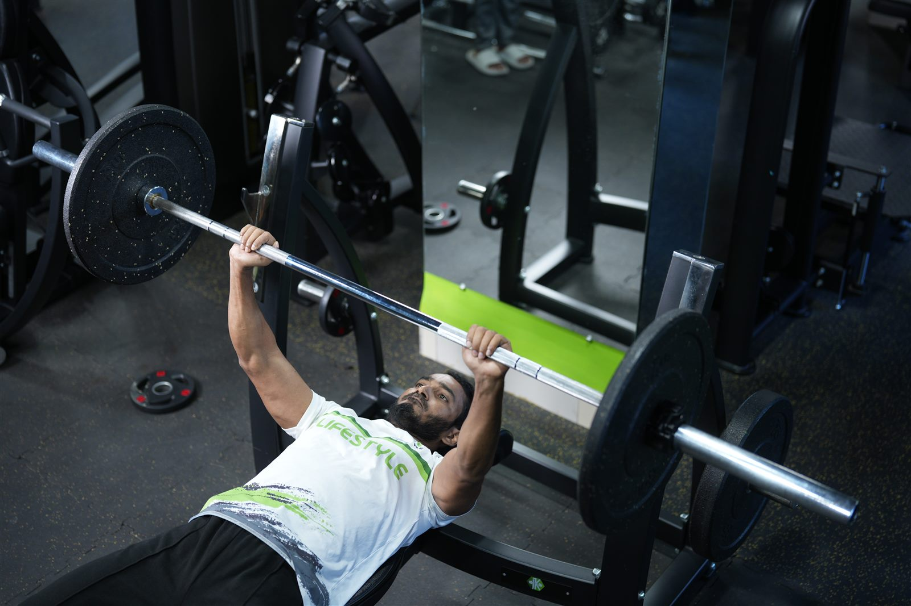

Dr. Muhammad Jahangir Kabir — Biography, Clinical Credentials & Mission
Learn everything About Dr. Jahangir Kabir (full name: Dr. Muhammad Jahangir Kabir / ডা. মুহাম্মদ জাহাঙ্গীর কবির) — Bangladeshi physician (MBBS, Chittagong Medical College, 2000), lifestyle specialist, and Founder & Chairman of JK Lifestyle, pioneering root-cause healing through science-backed lifestyle medicine.
Early Life, Medical Education & The Natural-Health Movement
Muhammad Jahangir Kabir (Bengali: মুহাম্মদ জাহাঙ্গীর কবির), widely known as Dr. Jahangir Kabir (ডা. জাহাঙ্গীর কবির), is a Bangladeshi physician, lifestyle specialist, and health influencer. Through his platform “JK Lifestyle,” he has popularized the concept of achieving a disease-free and medicine-free life by changing one’s lifestyle — explaining these principles on the basis of medical science so millions of people can heal naturally.
From Cantonment Upbringing To Chittagong Medical College
Muhammad Jahangir Kabir was born in 1974 into a respected Muslim family in Kachua, Bagerhat district, Bangladesh. Due to his father’s service in the Bangladesh Army, he spent most of his childhood and adolescence in various cantonments across the country.
He completed his Secondary School Certificate (SSC) from Shaheed Ramiz Uddin High School in 1990 and his Higher Secondary Certificate (HSC) with star marks from Adamjee Cantonment College in 1992. In the 1993–94 session, he was admitted to Chittagong Medical College to pursue an MBBS degree. He successfully completed his MBBS in 2000 and subsequently completed a one-year clinical internship at Chittagong Medical College and Hospital.
He emphasizes five key pillars of healthy living: a balanced diet, regular exercise, autophagy, adequate sleep, and mental peace. Maintaining these principles helps strengthen the body’s immune system and allows one to stay healthy naturally. Even those who have become ill due to long-term unhealthy habits can recover and stop relying on medication by adopting these lifestyle practices under medical guidance.
Muhammad Jahangir Kabir (মুহাম্মদ জাহাঙ্গীর কবির)
“Jahangir Kabir inspires millions to heal naturally through fasting, real food, and balanced living.”
- Born
- 1974 (Kachua, Bagerhat, BD)
- Medical Degree
- MBBS (CMC, 2000)
- Postgraduate
- CCD (BIRDEM, 2010) · UK Diplomas
- School & College
- SSC (1990) · Adamjee HSC (1992)
- Organization
- Founder & Chairman, JK Lifestyle
- Global Reach
- 10,000,000+ Followers



Clinical Philosophy & Root-Cause Healing
When learning About Dr. Jahangir Kabir, his health philosophy centers on learning the art of maintaining wellness by preserving the body’s natural immunity. When illness occurs, he emphasizes addressing the root causes of disease through lifestyle modification rather than relying solely on medication — tailoring lifestyle recommendations to the type and nature of each patient’s illness for effective healing and long-term wellness.
Years in Medical Practice
MBBS from Chittagong Medical College (2000) & RMO at National Hospital, Feni (2002–2019)
Global Community
Nearly ten million followers across YouTube & Facebook learning natural lifestyle medicine
Core Ecosystem Initiatives
JK Lifestyle, Health Revolution, JK Fitness Arena, JK Food Arena, Ultimate Organic Life & JK Prakritik Krishi
Healthy Eating & Autophagy
Consuming organic and natural foods while avoiding processed and chemically treated items, alongside regular or intermittent fasting (autophagy) to keep cells healthy.
Regular Exercise & Adequate Sleep
Incorporating walking, physical workouts, strength training, and an active daily routine, paired with going to bed between 9–10 PM and waking up early in the morning.
Mental Peace & Tailored Care
Maintaining inner calm since the mind and body are deeply connected, with practical guidance tailored to the type and nature of each patient’s illness for long-term wellness.
Career, Medical Education & International Diplomas
From 2002 to 2019, Muhammad Jahangir Kabir served as a Resident Medical Officer at National Hospital, Feni, while completing specialized certifications in Bangladesh, England, and the USA.
Education & Specialized Training
-
SSC (1990) & HSC (1992): Completed Secondary School Certificate (SSC) from Shaheed Ramiz Uddin High School in 1990 and Higher Secondary Certificate (HSC) with star marks from Adamjee Cantonment College in 1992.
-
MBBS (2000) & Internship: Admitted to Chittagong Medical College in the 1993–94 session, graduated with an MBBS degree in 2000, and completed a one-year internship at Chittagong Medical College and Hospital.
-
Certificate Course in Ultrasonography (2009): Completed Certificate Course in Ultrasonography from BIUR, Dhaka in 2009.
-
CCD — Certificate Course on Diabetology (2010): Successfully completed the CCD from BIRDEM Hospital, Dhaka in 2010.
-
Diploma Modules in Asthma (2011), Diabetes (2012) & COPD (England): Earned a Diploma Module in Asthma from England in 2011, a Diploma Module in Diabetes from England in 2012, and a Diploma Module in COPD (England).
-
Spiro 360 Course in Spirometry (USA): Completed the Spiro 360 Course in Spirometry from the USA with distinction.
Professional Roles & Affiliations
-
Founder and Chairman — JK Lifestyle: Currently serves as the Founder and Chairman of JK Lifestyle, his primary platform for open health education and lifestyle medicine.
-
Resident Medical Officer (2002–2019): Served as Resident Medical Officer (RMO) at National Hospital, Feni from 2002 to 2019.
-
Trainer and Mentor: Diploma International Asthma Module Course.
-
Joint Secretary: Bangladesh Primary Care Respiratory Society (BPCRS).
-
Course Coordinator & Instructor: Served as Course Coordinator and Instructor for the International Asthma Module.
-
Member: Bangladesh Private Medical Practitioners Association (BPMPA).
Publications, Media Presence & Verified References
Dr. Jahangir Kabir primarily uses Facebook and YouTube to spread his message globally, reaching nearly ten million followers, alongside publishing informative articles, blogs, health books, and lifestyle planners.
Official Platforms & Sources
Across various platforms, About Dr. Jahangir Kabir's educational work is freely accessible to help families follow the JK Lifestyle principles:
-
Facebook: Dr. Jahangir Kabir (DrJahangirkabircmc)
-
Official Website: drjahangirkabir.com
-
JK Lifestyle: jklifestyleltd.com
Press Coverage & References
- The Daily Ittefaq (in Bengali): “নতুনদের জন্য ডা. জাহাঙ্গীর কবিরের কিটো ডায়েট চার্ট”.
- Jagonews 24 (2020-02-20): “ডা. জাহাঙ্গীর কবিরের পরামর্শ : ৫ মিনিটে কমান পেটের মেদ”.
- Jachai (যাচাই) (in Bengali): “ডাঃ জাহাঙ্গীর কবির” — Biographical & medical verification archive.
- Jachai (যাচাই) (2021-08-16): “ন্যাচারোপ্যাথি: ডাঃ জাহাঙ্গীর কবির আলোচনায় যে চিকিৎসার সাথে আপনার পরিচিতি থাকা দরকার”.
- The Daily Observer: “JK Lifestyle produce organic food for tourists”.
- JK LIFE STYLE LIMITED: “News and Media — Latest Updates & YouTube Videos”.